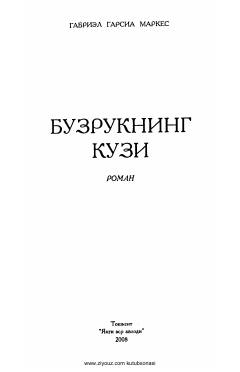

BKGabriyel Garsia Markesning mashhur romanining o'zbek tilidagi tarjimasi.
Ushbu roman taniqli yozuvchi Gabriyel Garsia Markes қаламига мансуб bo'lib, o'quvchilarga chuqur ma'noviy va badiiy ta'sir ko'rsatadigan asarlardan biridir. Kitob inson taqdiri, jamiyat va hayotiy haqiqatlar haqida hikoya qiladi. Asar o'zbek tiliga Ibrohim G'afurov tomonidan tarjima qilingan.